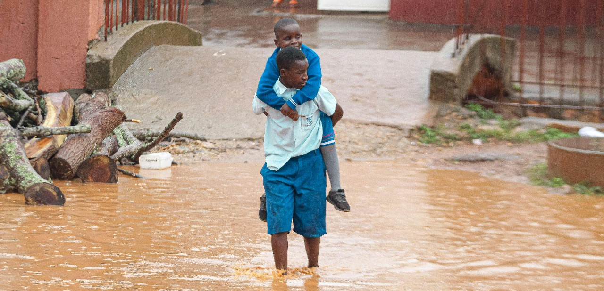
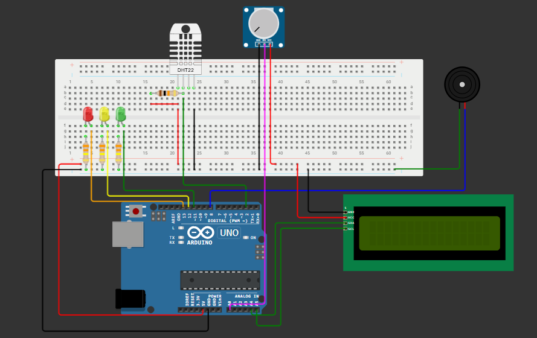
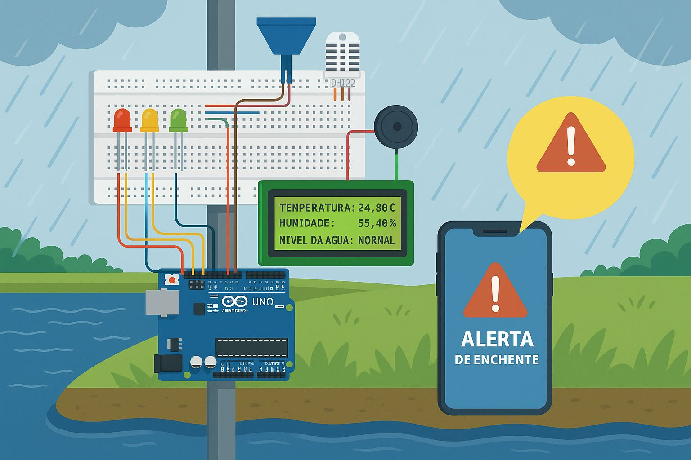
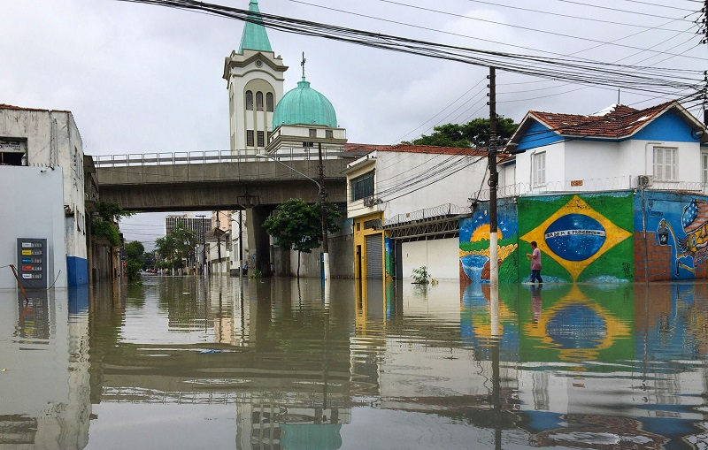

O Problema
Enchentes e alagamentos são frequentes no Brasil, afetando áreas periféricas com pouca infraestrutura e drenagem urbana extremamente precária.
Esses eventos causam prejuízos materiais, riscos à vida e pioram sem um sistema de alerta público, eficiente, acessível e rápido.
Tecnologias Utilizadas
Nossa solução usa sensores de baixo custo conectados a Arduino: ultrassônicos para água, DHT22 para clima e pluviômetro para chuva.
Os dados são enviados em tempo real para a nuvem, permitindo acesso às informações e envio de alertas antecipados automaticamente.
Objetivos do Projeto
Nosso principal objetivo é criar uma estação de monitoramento eficiente, acessível, tecnológica e fácil de usar para diversas comunidades vulneráveis.
A meta é monitorar em tempo real variáveis ambientais críticas, como nível da água, chuva intensa e emitir alertas antecipados.
Público-Alvo
A solução é voltada para comunidades em áreas de risco, especialmente em regiões com infraestrutura urbana fraca, precária e vulnerável.
Atende gestores, Defesa Civil, escolas públicas, ONGs e instituições voltadas à prevenção de desastres. Interface simples, acessível a usuários leigos.
Benefícios
Com a estação de monitoramento inteligente, moradores tomam decisões baseadas em dados reais. O sistema contribui para:
- Redução de prejuízos materiais;
- Salvamento de vidas;
- Educação sobre mudanças climáticas;
- Uso sustentável de tecnologia de baixo custo;
- Fortalecimento da cidadania e da prevenção de riscos.
Impacto no Dia a Dia
A solução criará uma cultura sólida de prevenção. Alertas automáticos por WhatsApp, e-mail e Telegram avisarão moradores antecipadamente.
Escolas usarão dados para educação, despertando consciência ecológica e científica nos estudantes sobre o ambiente natural onde vivem.
Alerta Visual em Tempo Real
Essa é uma simulação do sistema enviando alertas visuais instantâneos para a comunidade sempre que houver risco iminente de enchente.